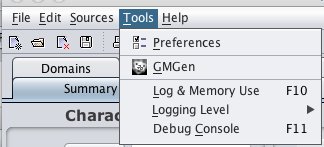
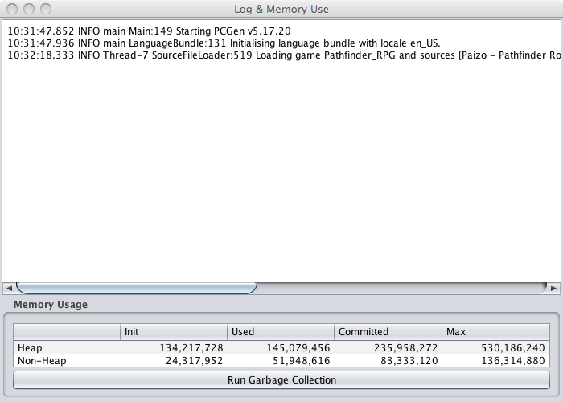
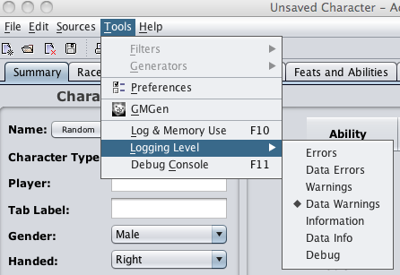
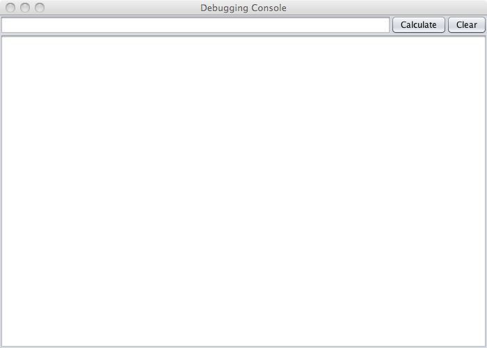

Debuging Options

PCGen includes several tools to assist in debugging. These are
the
Log & Memory Use
window, the
Logging Level
setting, and the
Debug
Console
. These tools are described below.

The
Log & Memory Use
menu option opens the
Log window. This is where errors are logged during the execution of
PCGen. You can also review memory usage as well as perform memory
"Garbage Collection" by clicking on the
Run Garbage
Collection
button.

The
Logging Level
menu option provides a method
to identify what level of problem reporting the JAVA console will
report. Problems can occur with the code itself or with the data
that makes up the data sets. Setting the logging to these levels
will cause the console to report the following:
-
Error
- An error occurred in the code which
will affect the output of PCGen. This error may result in an error
in calculation or in the failure of the user interface to respond
as expected.
-
Data Errors
- An error in data has occurred,
whether because it failed to load, to be parsed by PCGen, or to be
saved.
-
Warnings
- An error occurred in the code which
may affect the output of PCGen. This error may result in an error
in calculation or in the failure of the user interface to respond
as expected.
-
Data Warnings
- An error in data has occurred,
whether because it failed to load, to be parsed by PCGen, or to be
saved.
-
Information
- Provides information on the code
progress in execution, e.g. "UI Loaded", "Datasets Loaded",
"Character Exported".
-
Data Info
- Provides information on the data's
progress in processing, e.g. "Data file Parsed OK".
-
Debug
- Provides internal calculations, etc.,
to ensure proper functioning of PCGen.

The
Debug Console
menu option opens the debug
window.